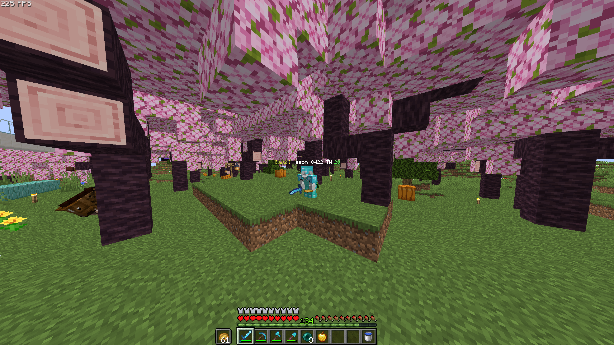
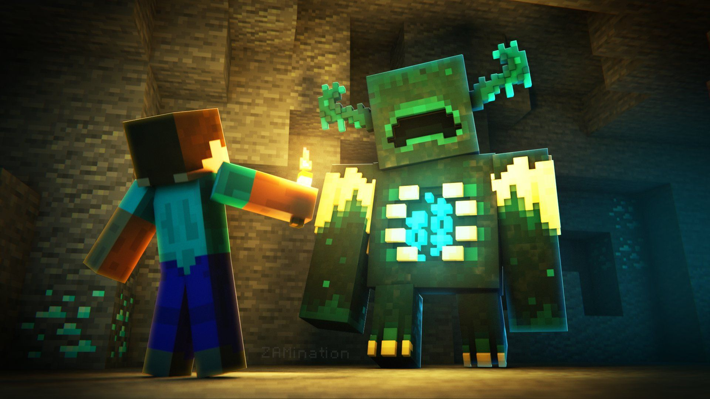

介紹:
Minecraft是一個微軟旗下Mojang Studios開發的沙盒遊戲
Minecraft 是由瑞典遊戲設計師。其後他於 2009年成立瑞典公司 Mojang 繼續開發並發行。在 2014年9月，他把 Minecraft 以25億美元賣給微軟。
遊戲中的特色功能包括探索世界、採集資源、合成物品及生存冒險等。
實際上，在 Minecraft 的世界裡，你可以隨意撿起、放下、移動任何一個方塊。
My playing exprience:
在Minecraft的生存模式中，我喜歡挖掘礦物、建基地、養殖農作物和與朋友PvP(Player Vs
Player)。每次探索都充滿了驚喜，不管是發現新的地形還是與怪物戰鬥，讓我總是迫不及待地想要再次玩這遊戲。(⬇我在遊戲裡的照片

